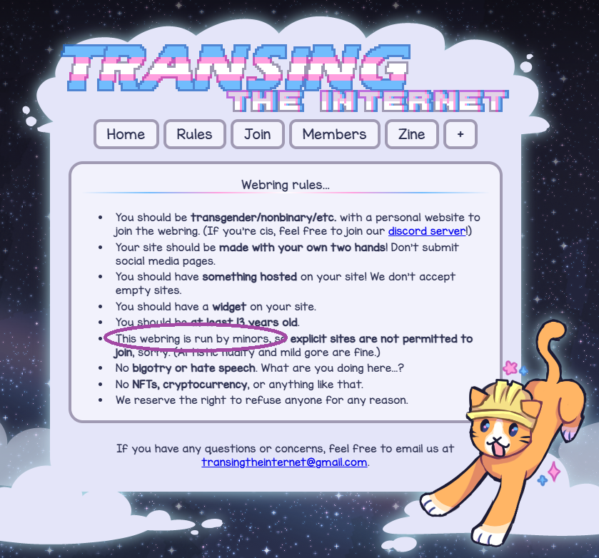
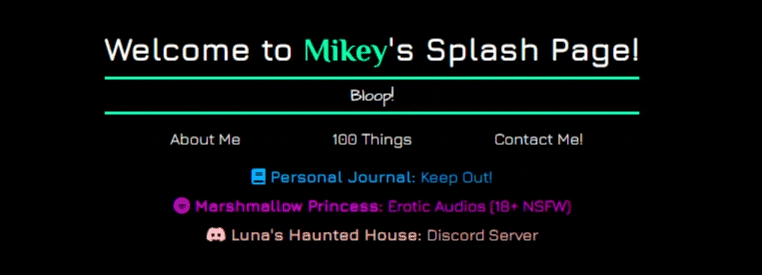
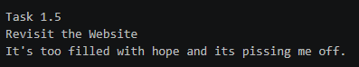

I originally came up with the idea to make a website as part of my decision to do '100 Things' and it quickly became the most important early priority of that entire project.
At first, I was gonna make this site on neocities and lean into that sort of aesthetic, but as I researched neocities more I formed an impression that it seems to be majorly backed by a community of teenagers and young adults fetishizing a past they were too young to know and it steadily turned me off to the whole thing.

Seeing this gave me pause
It's not as though the idea of a bunch of kids making old-web style sites bothers me; on the contrary, I think it's really cool of them! It just also changed my perception of things in a way that made me think harder about what I'm even wanting out of making this website in the first place.
(This substack article largely helped to refine my more general perceptions into a cohesive perspective regarding all this.)
So one I had decided I was just gonna make my own standalone site and host it on github I got to work making a splash page. At the time, I didn't have a very cohesive sense of identity, and I decided I would demonstrate that by having my site reference me through a carousel of different names with associated fonts and colors.

Who am I?
I also decided early on that I would go out of my way to ensure that every asset I use on the site would be entirely made by me. Since I already have a backlog of musical compositions and performances I decided I could show them off as background tracks for each page.
I have programmed sites in the past that can keep music playing through page changes using ajax, but I decided I didn't really want to fuck with that. I like each page feeling like it's own "space", at least for now.
I made sure to add my ideas to the task description as I thought of them, though there's many secrets and easter eggs not mentioned.
The Task
Task #1
Make A Website!
Description: You're on it right now!
Purpose: To create a platform for self-promotion and self-expression. I want to be able to show off all of the things I end up doing and have already done in one easily explorable place.
Minimum Acheivement: Need to have an about me page, a 100 things page, a splash page, and the ability to contact me from the site.
Goal: To be satisfied with the result and craft an enjoyable experience for a would-be viewer. Hold nothing back as I find ways to express my creations and personality.
Minimum Requirement Check:
Splash Page:
About Me:
100 Things:
Contact Me Page:
Bonus:
Music Settings Page:
Add Sound Effects:
Completed Tasks Section with link to Journal Page:
Journal Page(s):
Status Update:
Bonus content time. Also need to verify there are no bugs and such.
While working on the site I was also trying to think through how I wanted to present myself. I wanted to maybe stream eventually and make a vtuber model for it, but I was struggling to decide on a persona.
I was also having a hard time navigating my fragmented sense of self in general. And the thoughts being stirred up by my explorations weren't exactly happy ones.

At one point I wrote this in my notes.
This ultimately led to me creating a secret underside to my about me page.